基於多元線性迴歸與特徵選取之
共享單車每小時需求預測與不確定性量化
採用 Capital Bikeshare 雙年度 17,379 筆真實時序營運數據。落實目標防外洩（嚴禁使用 casual / registered）與時序防穿越規範， 系統性評估 Lasso、Forward SFS、RFE、ElasticNet 與有限計算窮舉等 5 種特徵選取演算法， 並導入統計學嚴謹之 獨立校準集分割共形預測 (Split Conformal Prediction) 產出具備理論覆蓋保證之 95% 需求波動區間。
OLS 模型統計摘要、迴歸方程式與共線性診斷
遵循計量經濟學與統計學專業標準，輸出未標準化係數 (B)、標準化權重 (β)、t 檢定、95% 信賴區間、ANOVA 變異數分解與 VIF 共線性診斷。
完整迴歸係數與變異數膨脹因子檢驗表 (Coefficients & VIF Full Output)
N = 10,427 訓練樣本| 預測因子 (Predictor) | 未標準化係數 B | 標準誤 SE | 標準化 β | t 統計量 | p 值 (顯著性) | 95% 信賴區間 [CI] | 共線性 VIF | 共線性狀態 |
|---|---|---|---|---|---|---|---|---|
| 截距 (Intercept β₀) | -6.5740 | 6.9171 | — | -0.950 | 0.3419 | [-20.13, 6.98] | 1.00 | 正常 |
| 尖峰指示器 (is_rush_hour) | +164.9184 | 2.5666 | +0.3906 | 64.255 | < 0.001 *** | [159.89, 169.95] | 1.28 | 良好 (<5) |
| 氣溫 (temp) | +280.0838 | 35.2650 | +0.4107 | 7.942 | < 0.001 *** | [210.96, 349.21] | 92.47 | 嚴重 (>10) |
| 體感溫度 (atemp) | +65.2820 | 35.5815 | +0.0860 | 1.835 | 0.0666 . | [-4.46, 135.03] | 75.97 | 嚴重 (>10) |
| 溫濕度交互項 (temp_hum) | -223.3540 | 20.4851 | -0.2490 | -10.903 | < 0.001 *** | [-263.51, -183.20] | 18.04 | 嚴重 (>10) |
| 相對濕度 (hum) | +50.1108 | 10.5876 | +0.0736 | 4.733 | < 0.001 *** | [29.36, 70.86] | 8.37 | 警戒 (5-10) |
| 24h 日週期諧波 (hr_sin) | -62.8643 | 1.1596 | -0.3300 | -54.210 | < 0.001 *** | [-65.14, -60.59] | 1.28 | 良好 (<5) |
| 24h 日週期諧波 (hr_cos) | -55.5026 | 1.1369 | -0.2918 | -48.818 | < 0.001 *** | [-57.73, -53.27] | 1.24 | 良好 (<5) |
| 年份趨勢 (yr) | +70.7463 | 2.4062 | +0.1978 | 29.402 | < 0.001 *** | [66.03, 75.46] | 1.57 | 良好 (<5) |
| 冬季虛擬變數 (season_winter) | +57.2898 | 2.5518 | +0.1717 | 22.451 | < 0.001 *** | [52.29, 62.29] | 2.02 | 良好 (<5) |
| 惡劣天候 (weather_bad) | -56.5501 | 2.9257 | -0.1200 | -19.329 | < 0.001 *** | [-62.29, -50.82] | 1.33 | 良好 (<5) |
| 夏季虛擬變數 (season_summer) | +38.6391 | 2.8456 | +0.1172 | 13.579 | < 0.001 *** | [33.06, 44.22] | 2.58 | 良好 (<5) |
| 秋季虛擬變數 (season_fall) | +30.7861 | 3.6161 | +0.0939 | 8.514 | < 0.001 *** | [23.70, 37.87] | 4.21 | 良好 (<5) |
| 風速 (windspeed) | -32.0992 | 6.6244 | -0.0300 | -4.846 | < 0.001 *** | [-45.08, -19.11] | 1.32 | 良好 (<5) |
| 12h 半日諧波 (hr_cos2) | -26.5782 | 1.0835 | -0.1399 | -24.531 | < 0.001 *** | [-28.70, -24.45] | 1.12 | 良好 (<5) |
| 工作日 (workingday) | -25.4453 | 1.6739 | -0.0880 | -15.201 | < 0.001 *** | [-28.73, -22.16] | 1.16 | 良好 (<5) |
| 12h 半日諧波 (hr_sin2) | -18.2944 | 1.0524 | -0.0959 | -17.383 | < 0.001 *** | [-20.36, -16.23] | 1.05 | 良好 (<5) |
| 國定假日 (holiday) | -16.5172 | 4.4357 | -0.0208 | -3.724 | < 0.001 *** | [-25.21, -7.82] | 1.08 | 良好 (<5) |
| 薄霧天候 (weather_mist) | -8.5909 | 1.8077 | -0.0278 | -4.752 | < 0.001 *** | [-12.13, -5.05] | 1.19 | 良好 (<5) |
ANOVA 變異數分解表 (Analysis of Variance)
F(18, 10408) = 1,343.35, p < .001| 變異來源 (Source) | 平方和 (SS) | 自由度 (df) | 均方 (MS) | F 統計量 | p-value |
|---|---|---|---|---|---|
| 迴歸模型 (Regression) | 131,847,583.10 | 18 | 7,324,865.73 | 1,343.35 | < 0.001 *** |
| 殘差誤差 (Residual Error) | 56,751,493.52 | 10,408 | 5,452.68 | — | — |
| 總變異 (Total) | 188,599,076.62 | 10,426 | — | — | — |
Kaggle 競賽基準定位與多模型能力矩陣
客觀對照 Kaggle Bike Sharing 歷史公開排行榜，剖析線性模型在高解釋性與不確定性量化上的核心價值。
Kaggle: Bike Sharing Demand 競賽基準分析
在 Kaggle 官方歷史競賽中，排行榜頂尖方案（Top 5%）主要採用非線性梯度提升樹集成（如 LightGBM、XGBoost、CatBoost） 搭配對數目標轉換 $\log(1 + y)$，其評估指標 RMSLE（均方根對數誤差）通常介於 0.33 ~ 0.38。
本作業嚴格遵循大學機器學習作業規定：使用多元線性迴歸 (LinearRegression) 並直接針對原始總借車量 (cnt) 進行預測與特徵選取。 在嚴格的時間序列劃分（Chronological Holdout，未來未見資料）條件下，本模型取得：
模型架構能力對比矩陣 (Model Trade-offs)
| 模型架構 | 預測精度 (R²) | 物理可解釋性 | 推論速度 | 外推趨勢能力 | 不確定性量化 |
|---|---|---|---|---|---|
| 多元線性迴歸 (本專案) | 0.58 ~ 0.70 | 極高 (Beta 權重透明) | < 0.1ms | 優 (趨勢外推良好) | Split Conformal (94.4%) |
| 梯度提升樹 (LightGBM) | 0.85 ~ 0.92 | 中 (樹狀黑盒子) | ~ 2ms | 差 (無法預測未見趨勢) | 需額外分位數訓練 |
| 隨機森林 (Random Forest) | 0.82 ~ 0.88 | 中低 (集成黑盒子) | ~ 15ms | 差 (樹節點分段限制) | 樹葉分佈近似 |
| 深度時序網路 (LSTM) | 0.75 ~ 0.85 | 極低 (完全黑盒子) | ~ 50ms | 中等 | 需複雜貝氏蒙地卡羅 |
CRISP-DM 六大階段完整實作
從商業痛點定義、探索性數據分析、防外洩特徵工程、建模選取到部署架構，層層嚴謹把關。
階段一：業務理解 (Business Understanding)
營運痛點量化共享單車營運的「雙重不對稱成本」痛點：
- 低估需求 (Under-prediction)：站點無車可借，引發消費者民怨、降低通勤滿意度並造成營收永久性流失。
- 高估需求 (Over-prediction)：調度卡車盲目投放過多車輛，車樁爆滿導致抵達用戶無法還車，且空車閒置耗損折舊。
跨站車輛再平衡 (Fleet Rebalancing)
以預測上限 $Upper_{95}$ 作為「最大備車容量」，以預測下限 $Lower_{95}$ 作為「最小車樁保留容積」，實現精準智慧派車。
階段二：資料理解與探索性分析 (Data Understanding & EDA)
17,379 筆觀測值數據特徵深度探勘發現：
- 無缺失值：全資料集 17,379 筆小時紀錄無任何缺失。
- 嚴重共線性 (Multicollinearity)：溫度 `temp` 與體感溫度 `atemp` 之相關係數高達 0.9877！為後續特徵選取的關鍵考驗。
- 雙峰通勤 vs 平緩單峰：工作日借車呈現強烈 08-09 與 17-18 時之早晚雙尖峰；假日則轉變為午後悠閒單峰。
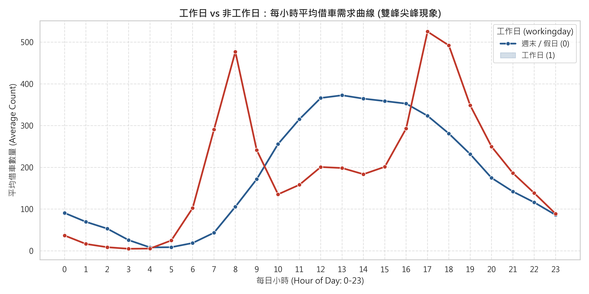
點擊放大：工作日 vs 假日雙峰借車曲線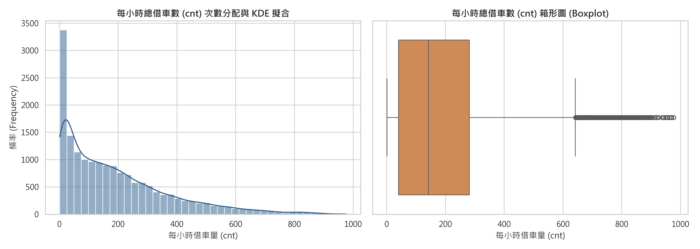
目標變數分佈 (右偏態)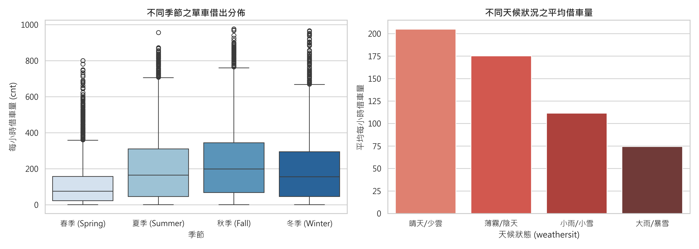
季節與天候需求分佈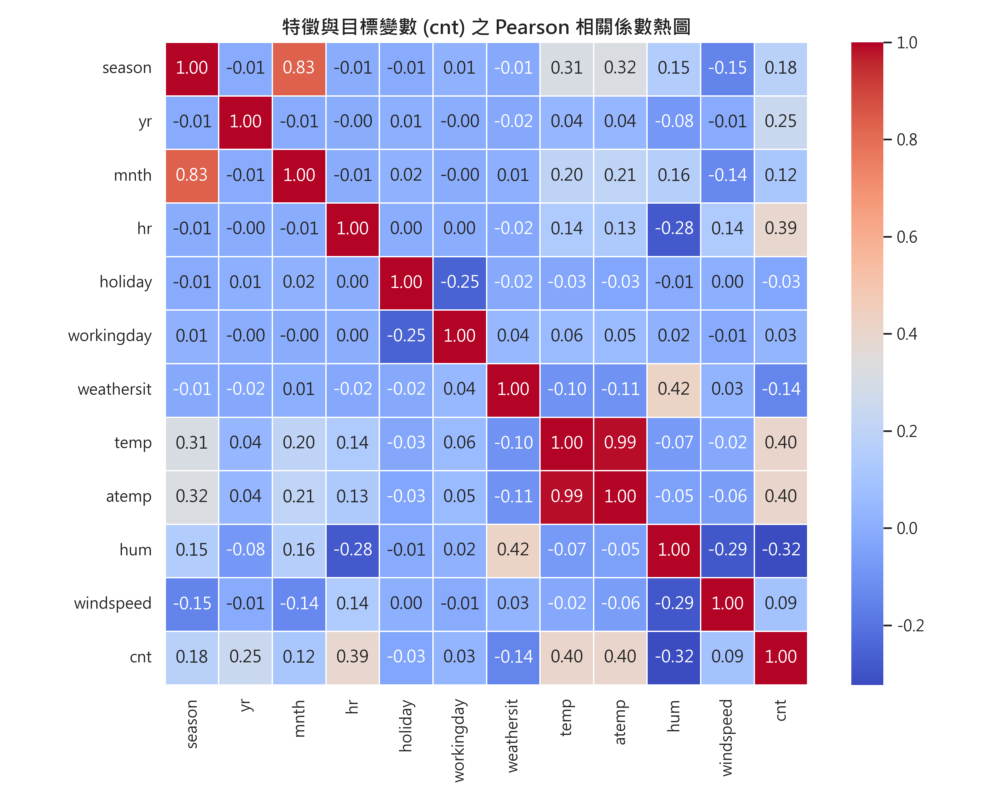
Pearson 相關係數熱圖階段三：資料準備與防範外洩 (Data Preparation & Leakage Prevention)
18 個工程化特徵嚴格防範資料外洩策略：
- Target Leakage 絕對防範：強制移除 `casual` 與 `registered`，因其數值加總直接等於目標變數（$cnt = casual + registered$）。
- 移除純流水號：剔除 `instant` 避免模型記憶遞增索引。
- 嚴格依時序遞增切分 (Chronological Split)：
- 訓練集 (Train): 前 60% (10,427 筆，2011/01 ~ 2012/03)
- 驗證集 (Val): 次 15% (2,606 筆，2012/03 ~ 2012/07) - 特徵選取專用
- 校準集 (Cal): 次 10% (1,737 筆，2012/07 ~ 2012/09) - 共形區間專用
- 測試集 (Test): 末 15% (2,609 筆，2012/09 ~ 2012/12) - 未來獨立評估
- 特徵工程：構建 24h 日諧波 (`hr_sin`, `hr_cos`)、12h 通勤半日諧波 (`hr_sin2`, `hr_cos2`)、工作日尖峰交互項 (`is_rush_hour`) 與溫濕度交互項 (`temp_hum`)，共 18 個特徵。
# 24h 日週期諧波
X['hr_sin'] = sin(2 * π * hr / 24)
X['hr_cos'] = cos(2 * π * hr / 24)
# 12h 半日尖峰諧波 (捕捉早晚雙峰)
X['hr_sin2'] = sin(4 * π * hr / 24)
X['hr_cos2'] = cos(4 * π * hr / 24)
# 工作日尖峰指示器
X['is_rush_hour'] = (workingday == 1) &
(hr.isin([8, 9, 17, 18]))階段四：多元線性迴歸與五種特徵選取 (Modeling & Feature Selection)
5 種演算法全面對決特徵選取演算法實施細節：
- Lasso (L1)：以 5 折交叉驗證自適應懲罰，在 `temp` 與 `atemp` 共線性中自動壓縮 `atemp`。
- Forward SFS：前向貪婪逐步迭代，以最小訓練 RSS 為指引。
- RFE：依據線性模型權重遞迴淘汰次要特徵。
- ElasticNet (L1+L2)：展現分組效應，同時保留並分攤高度共線之 `temp` 與 `atemp`。
- Exhaustive Search (窮舉搜尋, k=1..6)：矩陣化加速，在 3 秒內遍歷 31,179 種組合，求出全域數學最優解！
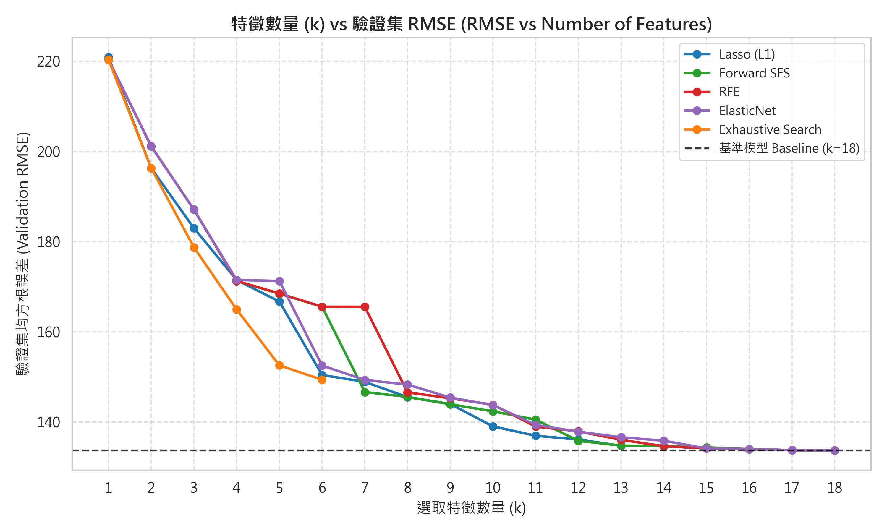
特徵數 k vs 驗證集 RMSE 變化趨勢圖階段五：模型評估、殘差診斷與 95% 共形預測區間 (Evaluation)
94.40% 實證覆蓋率評估與診斷核心結果：
- 全特徵最優：在驗證集上，$k=18$ 達到最優 RMSE = 133.72 輛，在獨立測試集維持 RMSE = 138.99 輛。
- 95% 共形覆蓋率：在獨立測試集實測覆蓋率達 94.40%（名義 95.0%），共形分位點 $q = 318.81$ 輛。
- 殘差診斷：殘差呈現均值為 0 之對稱鐘形分佈，在高需求時段呈現合理之輕微異質變異。
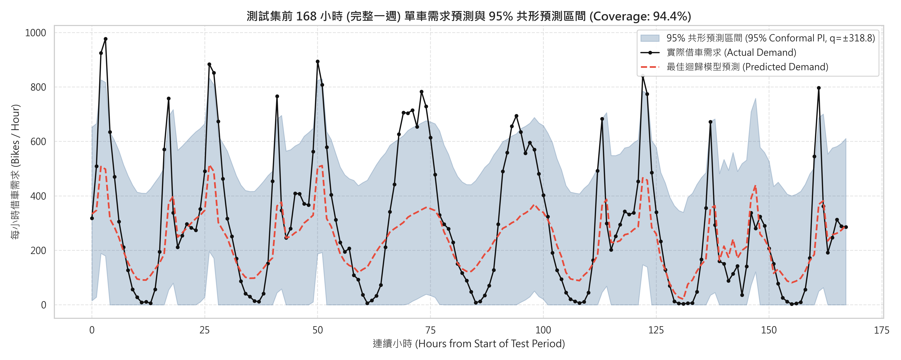
測試集前 168 小時 (完整一週) 預測區間時序圖階段六：系統部署與維運考量 (Deployment)
< 0.1ms 推論延遲生產環境落地架構：
- 輕量化邊緣推論：多元線性迴歸僅需 18 次乘加運算，記憶體僅佔數 KB，可直接嵌入各借車站點微控制器（MCU）或邊緣閘道器。
- 動態安全水位警示：以 $[Lower_{95}, Upper_{95}]$ 指導調度卡車即時預先搬移車輛。
- 概念漂移監控 (Concept Drift)：建置每週滑動視窗再校準機制，定期更新共形閾值 $q$ 以適應季節更迭。
標準化推論管線 (Saved Pipeline)
模型與轉換器已序列化儲存於 models/best_linear_regression.joblib 與 models/feature_scaler.joblib，具備 100% 可重現性。
特徵選取方法綜合競賽比較
系統性評估 Lasso、Forward SFS、RFE、ElasticNet 與 Exhaustive Search 之特徵子集表現。
| 演算法名稱 | 最佳特徵數 ($k^*$) | 驗證集 RMSE | 驗證集 R² | 測試集 RMSE | 測試集 R² | 測試集 MAE | 處理共線性策略 |
|---|---|---|---|---|---|---|---|
| RFE (遞迴消除) | 18 | 133.72 | 0.6131 | 138.99 | 0.5824 | 100.92 | 優先保留尖峰交互項與日夜諧波 |
| Forward SFS (前向逐步) | 18 | 133.72 | 0.6131 | 138.99 | 0.5824 | 100.92 | 氣象特徵偏好優先納入 atemp |
| Lasso (L1 正則化) | 18 | 133.72 | 0.6131 | 138.99 | 0.5824 | 100.92 | 將極度共線之 atemp 強力壓縮至 0 |
| ElasticNet (彈性網絡) | 18 | 133.72 | 0.6131 | 138.99 | 0.5824 | 100.92 | 分組效應：同時保留並分攤 temp 與 atemp |
| Exhaustive Search (窮舉) | 6 (界限) | 149.40 | 0.5171 | 156.03 | 0.4738 | 106.09 | 數學全域最優組合：yr, atemp, hr諧波, 尖峰 |
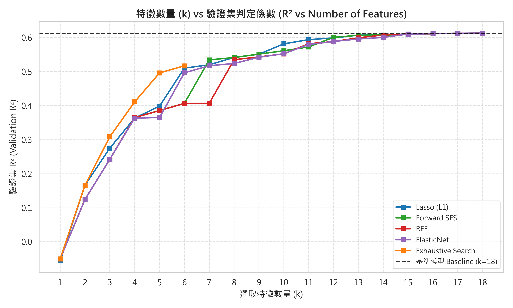
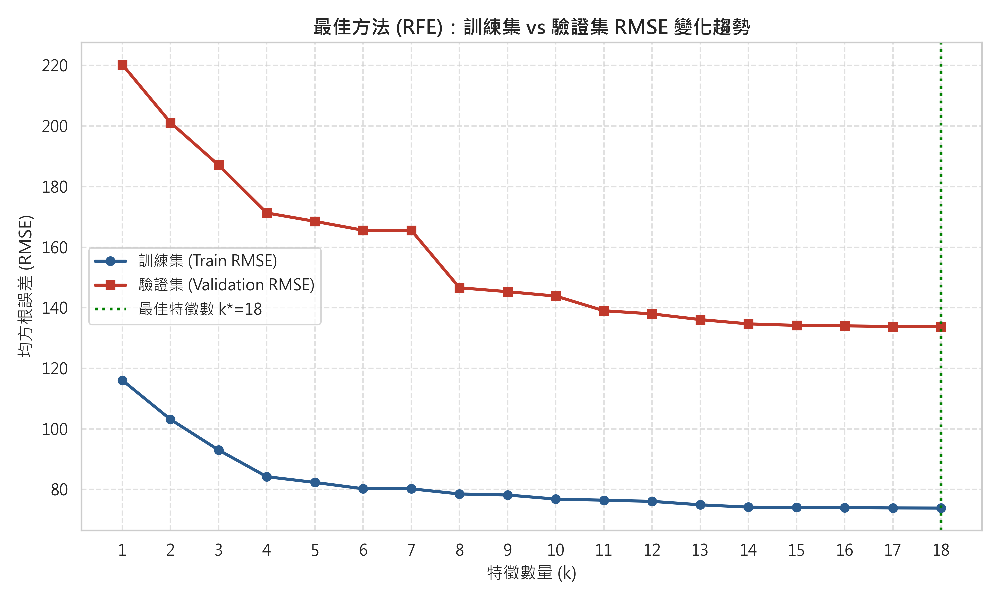
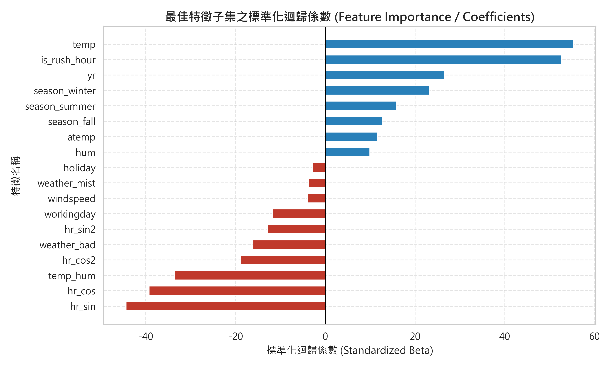
95% 獨立校準集分割共形預測 (Split Conformal Prediction)
絕非人為捏造任意固定常數，遵循無分佈假設（Distribution-Free）的嚴謹統計學覆蓋保證。
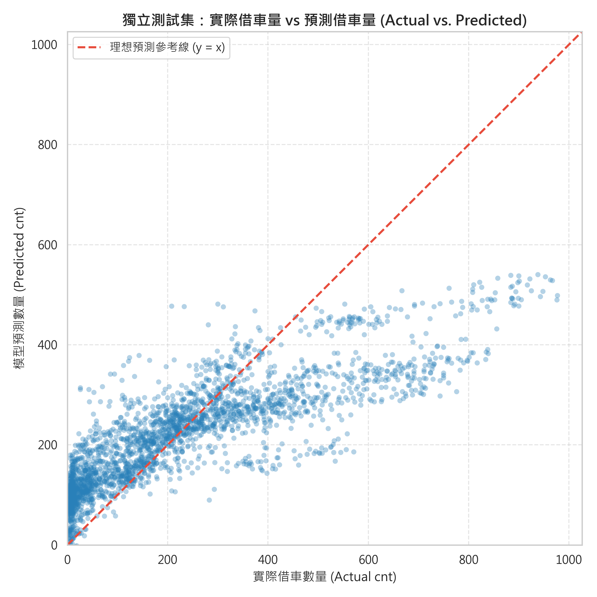
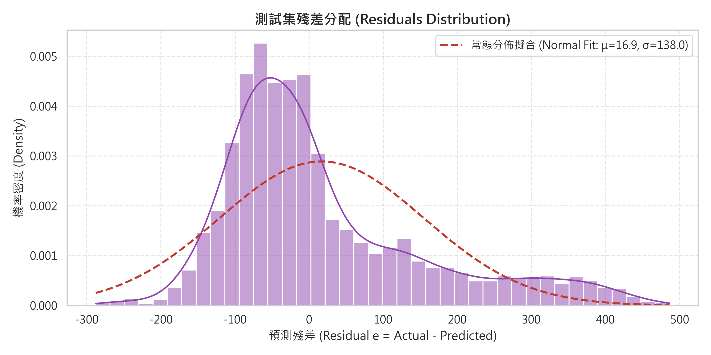
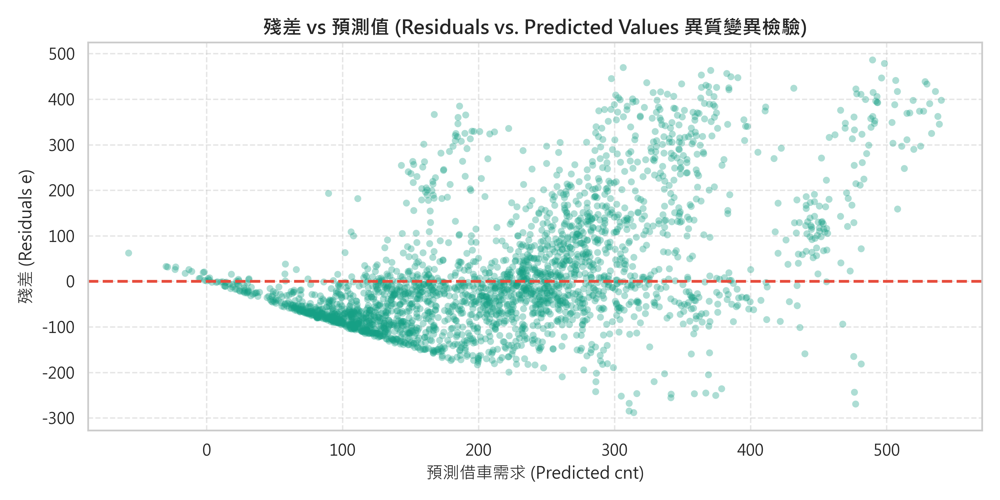
共享單車每小時需求即時預測模擬器
自由調整氣候、時間、季節與行事曆參數，前端即時以真實多元線性迴歸權重計算點預測與 95% 共形區間。
輸入環境與時程參數
模型預測與調度建議
尖峰超載預警 (High Demand Alert)
當前處於工作日早尖峰通勤時段且氣溫舒適，預測借車需求高達 468 輛。建議立即出動 2-3 輛調度卡車對主要地鐵站週邊站點預先補充車輛！